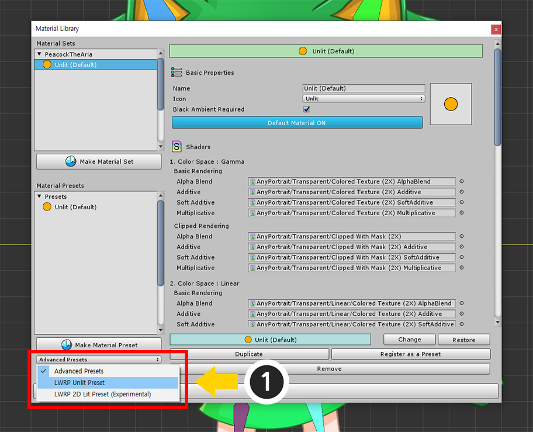
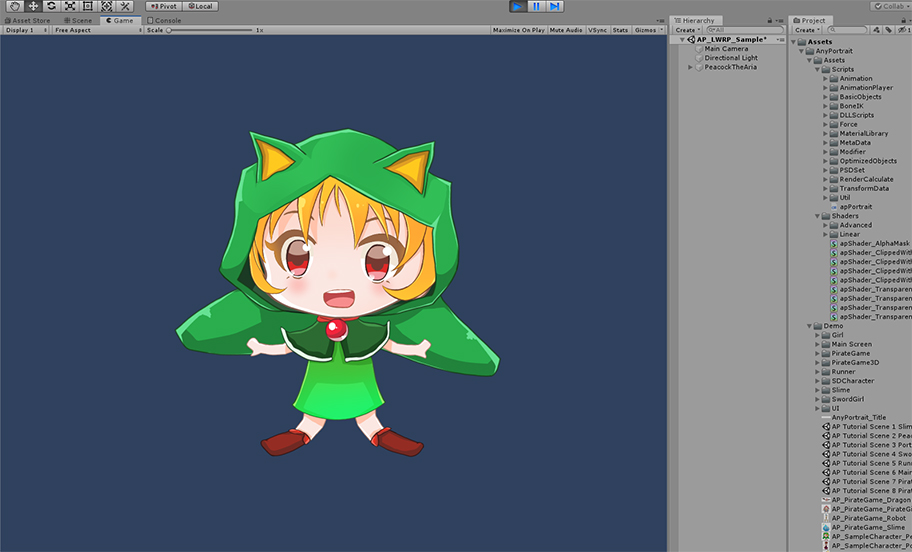
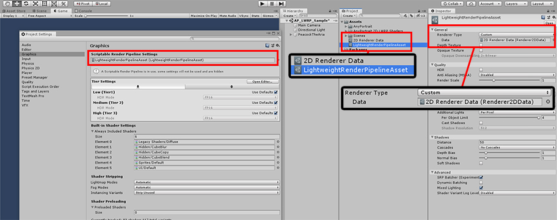
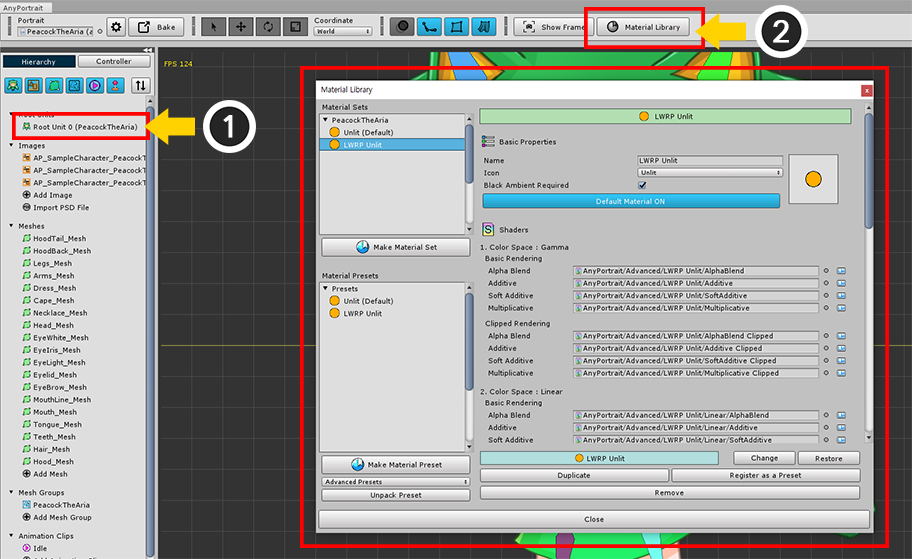
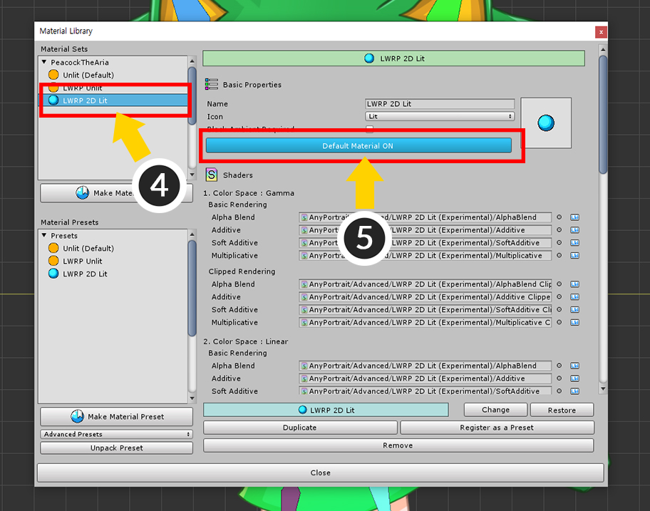
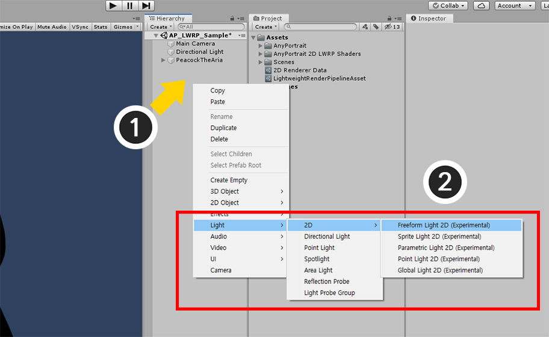
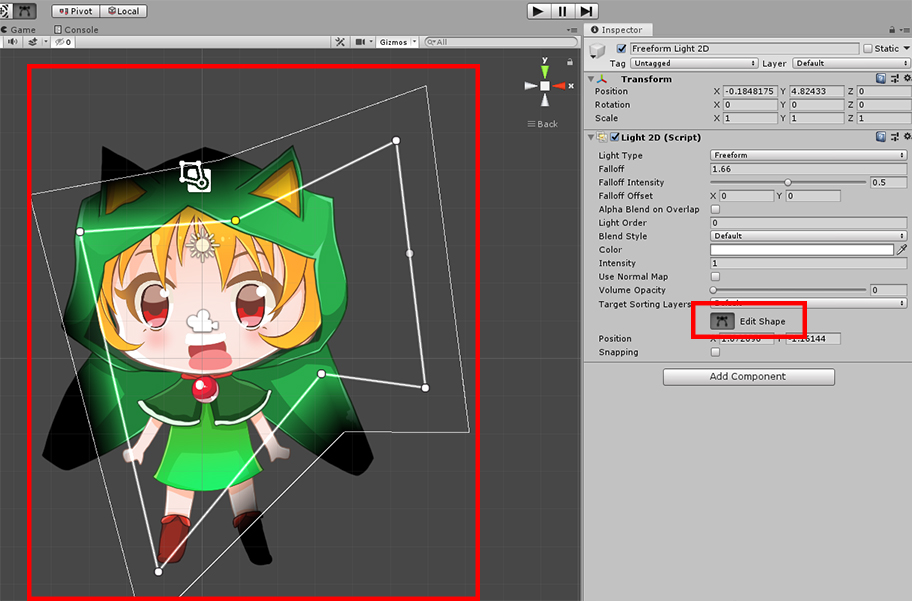
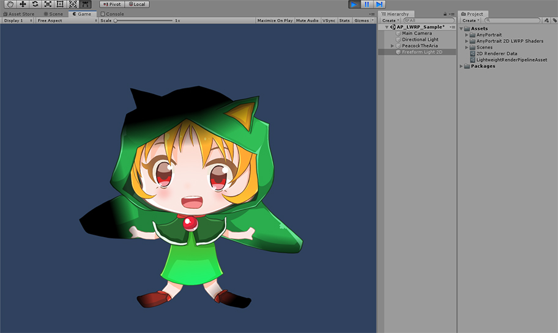

AnyPortrait > 메뉴얼 > Lightweight Render Pipeline 연동하기
Lightweight Render Pipeline 연동하기
1.1.8
Lightweight Render Pipeline (경량 렌더 파이프라인)은 유니티 2018에서 소개되고 유니티 2019에서 정식으로 채용된 새로운 렌더링 방식입니다.
C# 스크립트로 렌더링을 제어할 수 있으며, 고품질과 최적화를 위한 기능들을 제공합니다.
Lightweight Render Pipeline, 줄여서 LWRP는 완전히 새로운 방식의 렌더링 파이프라인이기 때문에 기존의 쉐이더들이 대부분 호환되지 않는다는 단점이 있습니다.
그리고 안타깝게도 AnyPortrait에서 제공하는 기본 재질들도 LWRP와 호환되지 않습니다.
이 문제를 해결하기 위하여 AnyPortrait v1.1.7에 추가된 기능인 "재질 라이브러리"에서 LWRP를 위한 재질을 제공하며, v1.1.8에서는 아래에서 설명할 LWRP 2D도 지원합니다.
이 페이지에서는 LWRP를 지원하는 재질을 설치하고 설정하는 과정을 다룹니다.
추가적인 설명에 대해서는 다음의 페이지를 참고해보시는 것을 권장합니다.
- 재질 라이브러리
- Shader Graph로 재질 작성하기
- 커스텀 쉐이더
- About the Lightweight Render Pipeline Manual (유니티 공식 페이지 / 영어)

먼저 유니티 에디터의 Package Manager를 열어서 Lightweight RP 항목을 선택합니다.
Lightweight RP 패키지가 설치되지 않았다면 Package Manager 창의 우측 하단에 설치 버튼이 나타납니다.
이 패키지를 설치하면 LWRP를 사용할 수 있습니다.
(유니티 버전에 따라 UI나 설치 방법이 다를 수 있습니다.)

메뉴의 Assets > Create > Rendering > Lightweight Render Pipeline > Pipeline Asset을 선택하여 LWRP 에셋을 생성합니다.
생성된 LWRP 에셋을 위의 이미지와 같이 Project Settings > Graphics에서 Scriptable Render Pipeline Settings에 할당합니다.
이제 렌더링 방식이 LWRP 방식으로 변경됩니다.
(자세한 설명은 관련 페이지를 참고하세요. 이 방법은 유니티 버전마다 다를 수 있습니다.)

LWRP는 기존의 쉐이더들을 지원하지 않기 때문에 재질이 정상적으로 렌더링되지 않습니다.
이 문제는 AnyPortrait 뿐만 아니라 대부분의 유니티 에셋과 재질들도 마찬가지입니다.

AnyPortrait 에디터를 엽니다.
(1) Root Unit을 선택합니다.
(2) Material Library 버튼을 누릅니다.
(3) 재질 라이브러리 창이 나타난 것을 볼 수 있습니다.

(1) 재질 라이브러리의 좌측 하단에서 Advanced Presets을 LWRP Unlit Preset으로 변경합니다.

(2) Unpack Preset 버튼을 누르면 선택된 재질 패키지가 설치됩니다.
(3) 설치 과정이 끝나면 안내 메시지의 확인 버튼을 누르고 재질 라이브러리를 다시 열어야 합니다.

LWRP Unlit 프리셋이 추가되었습니다.

새로운 재질 세트를 만들어봅시다.
(1) Make Material Set 버튼을 누릅니다.
(2) 방금 추가했던 LWRP Unlit 프리셋을 선택합니다.
(3) Select 버튼을 누르면 재질 세트가 생성됩니다.

(4) 생성된 LWRP Unlit 재질 세트를 선택합니다.
(5) Default Material 버튼을 눌러서 기본 재질로 설정합니다.

이 과정도 매우 중요합니다.
LWRP와 같은 Scriptable Render Pipeline (SRP)에서는 클리핑 메시가 정상적으로 출력되지 않는 문제가 있습니다.
유니티의 카메라에서의 렌더링 처리 방식이 기존과 다르기 때문입니다.
v1.1.8에서 이 문제를 해결하기 위한 옵션을 제공합니다.
(1) Bake 버튼을 눌러서 다이얼로그를 엽니다.
(2) Setting 탭을 누릅니다.
(3) Render Pipeline의 항목의 값을 Scriptable Render Pipeline으로 변경합니다.
참고.
이 옵션은 Unity 2019.1부터 지원됩니다.
Unity 2018에서는 SRP를 사용할 수 있지만, 제공되는 기능의 제약으로 클리핑 메시를 정상적으로 출력할 수 없습니다.

Bake 탭을 선택하고 Bake 버튼을 누릅니다.

유니티 씬을 열면 캐릭터가 정상적으로 렌더링되는 것을 볼 수 있습니다.
Lightweight Render Pipeline 2D와 연동하기
유니티 2019에서 LWRP를 2D 게임에 적용하는 기능이 추가되었습니다.
기본적으로 LWRP와 유사한 방식이지만, LWRP 2D는 기존의 LWRP와 다른 쉐이더를 이용합니다.
따라서 LWRP 2D를 이용하기 위해서는 또다른 재질을 만들어서 적용해야합니다.

LWRP 2D를 설정하는 방법입니다.
LWRP가 설정된 상태에서, LWRP 에셋의 Renderer Type을 Custom으로 변경합니다.
2D Renderer Data 에셋을 생성한 후, LWRP 에셋의 Data에 할당하면 LWRP 2D 방식으로 전환됩니다.

LWRP 2D 재질을 설정하는 방법은 거의 동일합니다.
(1) Root Unit을 선택합니다.
(2) Material Library 버튼을 누릅니다.

설치할 재질 프리셋을 선택해야합니다.
(1) LWRP 2D Lit Preset (Experimental)을 선택합니다.

(2) Unpack Preset 버튼을 눌러서 프리셋 패키지를 설치합니다.
(3) 안내 메시지의 확인 버튼을 누르고 재질 라이브러리를 재시작합니다.

LWRP 2D Lit 프리셋이 설치되어 추가되었습니다.

(1) Make Material Set 버튼을 누릅니다.
(2) LWRP 2D Lit 프리셋을 선택합니다.
(3) Select 버튼을 눌러서 재질 세트를 생성합니다.

(4) 새로 생성된 LWRP 2D Lit 재질 세트를 선택합니다.
(5) Default Material 버튼을 눌러서 기본 재질로 설정합니다.

(1) Bake 버튼을 누릅니다.
(2) Bake 다이얼로그의 Setting 탭에서 Render Pipeline 항목을 Scriptable Render Pipeline으로 설정합니다.
(3) Bake 탭에서 Bake 버튼을 누릅니다.

유니티 씬에서 확인해보면 검은색 또는 어두운 색으로 보일 것입니다.
설치된 프리셋이 라이팅이 되는 재질이기 때문에, 빛이 없는 경우 어둡게 나타나기 때문입니다.
씬에 빛을 추가해야하는데, LWRP 2D에서 제공하는 기능을 이용해봅시다.

(1) Hierarchy에서 마우스 우클릭을 합니다.
(2) Light > 2D를 선택하면 LWRP 2D를 위한 다양한 종류의 Light 2D들을 선택할 수 있습니다.
이 페이지에서는 Freeform Light 2D를 선택해보았습니다.

Edit Shape 버튼을 눌러서 빛의 형태를 편집합니다.

캐릭터가 LWRP 2D에서 예쁘게 렌더링되는 것을 볼 수 있습니다.